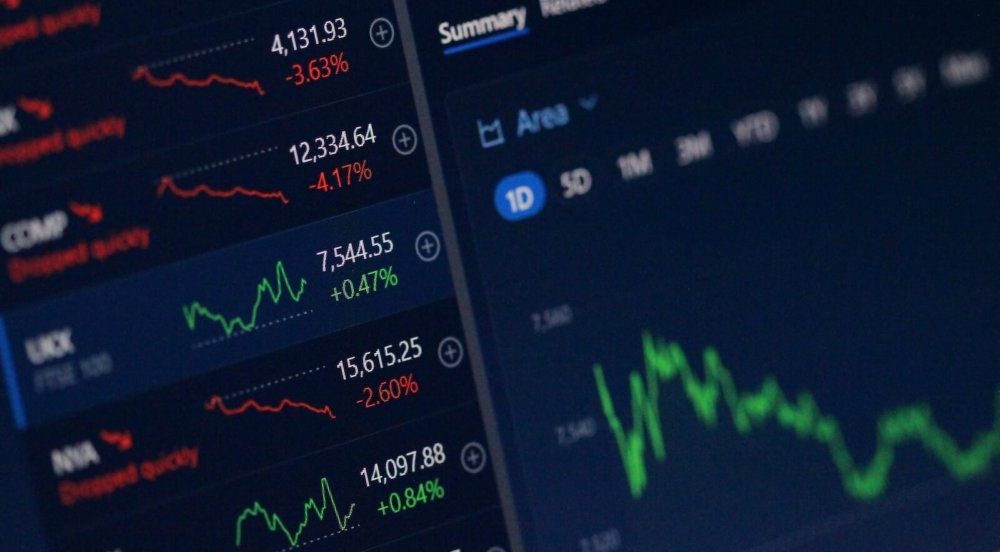

Three Least Favorite Watch Topics
Loving watches doesn’t mean loving everything about watch media. The deeper I’ve gone into the hobby the more selective I’ve become about what I read, watch, and listen to. There are some topics that are frequently covered and successful in terms of clicks and reach, but leave me completely cold.
 Nenad Pantelic • January 27, 2026
Nenad Pantelic • January 27, 2026

They all serve a purpose, and there is clearly an audience for them. But as someone who loves watches as objects, tools, and expressions of design and engineering, these are the areas where I tune out.
These are not bad topics. They are just my least favorite.
1. Business of Watches
Let me get this one out of the way: the business side of watches bores me to death.
Morgan Stanley reports, export values, year-over-year growth in Swiss watch volumes, brand rankings by revenue... None of this has ever made me enjoy the hobby more. I understand why it exists. I understand why it’s useful. But to me, it feels completely detached from why I got into watches in the first place. When I finish an article or a podcast episode, I ask myself why the hell I spent 40 minutes listening to this.
The conversations often go around export volumes, price per SKU, stock performance, brand valuations, or how geopolitics and currency fluctuations might impact the market. That’s fine if you’re an investor, analyst, or someone working in the industry.
But to me the business of watches is dry, it’s corporate, and honestly it’s boring.
Even my favorite media outlets have pivoted to this. I used to tune into the Hodinkee Podcast to hear people geek out over vintage references and design quirks. Now it feels like a briefing for McKinsey consultants, with a focus on market directions and brand equity. When we start discussing watches in the same way as politics and global trade, then we lose the magic.
I don’t judge anyone for enjoying this stuff. I just personally feel zero emotional connection to quarterly reports and YoY metrics.
2. Auction Results
If watch media coverage were proportional to real life, auctions would barely register.
But there they are: auction previews, hidden gems you and I shouldn’t miss, auction results... For months they pop up in the headlines, social feeds, and YouTube recommendations.
For most of us auctions are completely theoretical. I don’t buy watches that way, you don’t sell watches that way, and we’ll never be in a room where a vintage Patek is hammered down for six figures. Yet we are asked to care deeply about things that have almost no relevance to how we actually engage with the hobby.
Yes, auction prices can influence market perception. Yes, record-breaking sales can have downstream effects. I get that part. But beyond the money, the actual reporting is what bothers me. The overall atmosphere and vibe of the coverage push me away.
Articles are full of sensationalism: stories about anonymous whales in the room, who outbid whom, which watch shocked the room, private dinners before the actual auction, and similar nonsense.
I’ll glance at auction news out of curiosity, but the elitist tone and disproportionate attention make it one of the easiest sections for me to scroll past.
This section is already very strong and evocative. I’ve made a few minor grammatical adjustments to improve the flow and ensure the comparisons are sharp.
3. Celebrity Watch Spotting
Finally I have to talk about celebrity watch spotting. Brands absolutely love it, and I fully understand why. A famous person wearing a watch generates instant reach, algorithm-friendly content, and mainstream visibility. This type of content performs well on social media and pulls in eyeballs far beyond our enthusiast bubble.
But I find it completely hollow. It does nothing for the hobby beyond surface-level hype.
I think it is completely silly to obsess over what a celebrity wears on a red carpet or courtside at a Lakers game. It’s rooted in vanity and the false idea that if we buy the watch, we somehow share the lifestyle.
It’s so tiresome because it’s inauthentic. Whenever I see a headline like "Spotted: [Famous Actor] Wearing a [New Release] at the Oscars," I know exactly what happened. A stylist took a loaner from a brand, put it onto a famous wrist, and made sure the cuff was pulled back just far enough for the cameras.
I would rather see a grainy photo of a saturation diver wearing a beat-up Submariner he’s owned for thirty years than a professional shot of a movie star wearing a pristine piece they’ll return to the brand the next morning. One is a story, the other is a commercial.
The Stuff That Matters
Give me stories about why a watch exists, what purpose it serves, how it was designed, or how it resonates with real owners. That is the stuff that keeps the hobby alive for me. There are tons of insightful articles, deep-dive videos, and genuine social media posts that actually cut through the BS.
Those are the corners of the watch world where I’ll continue to spend my time. Everything else? I’ll pass and keep scrolling.